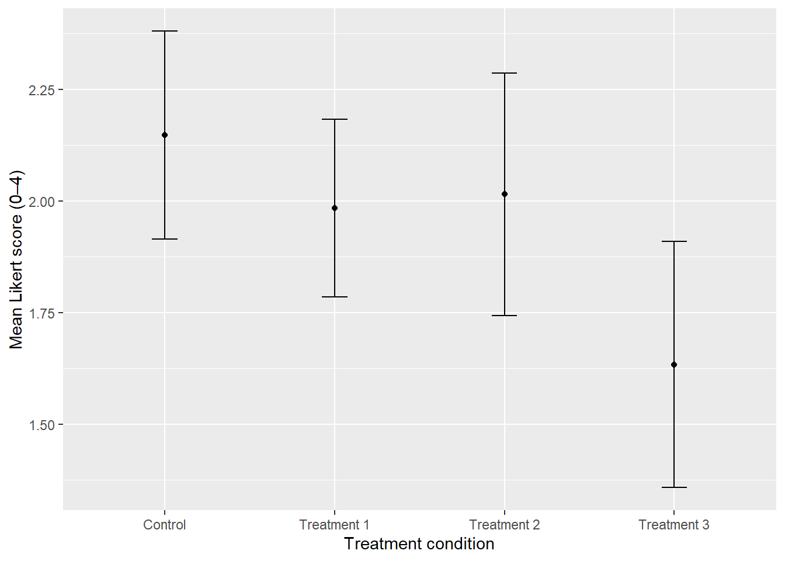

In recent years, companies have heavily integrated AI into their employee management processes. For some companies, AI performance evaluations are now taken into consideration while handling appraisals and bonuses. While AI promises a sense of certainty and fairness of judgement algorithmically, does it put the workers under a certain amount of pressure to meet the AI standards? Does the employee’s outlook on their company change based on how AI judges their performance? Our research targets how AI based performance evaluations shape employees’ perceptions of their workplace, and their loyalty to their company.
Methodology
This study uses a randomized survey experiment to determine how the use of AI in employee performance reviews affect an individual’s perception of their workplace. Participants are randomly assigned to one of four treatment conditions, which vary in the amount of AI involvement in the performance evaluation process.
In the control treatment, employee performance is reviewed solely by a human, wherein the manager collects information, writes the review, and provides the final feedback.
In Treatment 1, AI will be used to collect data, however a manager writes the review, and provides the final feedback.
In Treatment 2, AI collects data, and writes a performance review, the manager simply provides the final feedback based on the review.
In Treatment 3, AI will collect data, write a performance review, and return it to the employee, with no human influence at all.
All participants complete the survey based on their perceptions of their workplace quality, trust in their employee evaluation process, and their loyalty to the company. The results are recorded using the Likert scale survey method. The sample size for this experiment consists of 250 participants, who were randomly assigned one of the four treatment methods as a part of the survey.
Research Question
Does the use of AI in employee performance reviews affect an individual’s perception of the quality of their work, their work environment, and personal allegiance / loyalty to their company?
Hypotheses
The use of AI in employee performance reviews plays a big role in employees’ perceptions of the quality of their work, their work environment, and personal allegiance / loyalty to their company.
Employees evaluated by AI view their work through a more critical lens as compared to employees evaluated by their human supervisors.
Treatments
Control
Treatment 1
Treatment 2
Treatment 3
Demographics questions
Yes
Yes
Yes
Yes
Exposure to traditional human driven performance review process. manager performs data collection and curation, generates report on performance, writes review, and provides feedback to employee
Yes
No
No
No
Exposure to AI augmented performance review process. AI performs data collection and curation; manager reviews data, writes review, and provides feedback to employee
No
Yes
No
No
Exposure to AI augmented performance review process. AI performs data collection and curation, generates report on performance, and writes review; manager provides feedback to employee
No
No
Yes
No
Exposure to AI driven performance review process. AI performs data collection and curation, generates report on performance, writes review, and provides feedback to employee
No
No
No
Yes
Survey questions to measure trust/opinions around the depicted performance reviews
Yes
Yes
Yes
Yes
Analysis
A one-way analysis of variance (ANOVA) was used to assess whether employees’ perceptions differed across the four performance evaluation (treatment)conditions. ANOVA is appropriate because the treatment conditions are categorical with more than two levels. The dependent variables are measured on Likert-type scales that can be considered approximately continuous in this experimental survey research.
This approach allows for comparison of mean responses across all treatment groups while controlling the overall Type I error rate. A significant omnibus effect was detected, so Tukey’s Honestly Significant Difference (HSD) test was used to identify specific pairwise differences between conditions.
library(tidyverse)library(broom)library(purrr)experimentData <-read_csv("data/rd_602_fall25_group11.csv", show_col_types =FALSE)recodeTreatments <-function(x) {case_when( x =="firstposter"~1, x =="secondposter"~2, x =="thirdposter"~3, x =="fourthposter"~4,TRUE~NA_real_ )}recodeYesNo <-function(x) {case_when( x =="Definitely not"~0, x =="Probably not"~1, x =="Might or might not"~2, x =="Probably yes"~3, x =="Definitely yes"~4,TRUE~NA_real_ )}recodeAllNone <-function(x) {case_when( x =="None at all"~0, x =="A little"~1, x =="A moderate amount"~2, x =="A lot"~3, x =="A great deal"~4,TRUE~NA_real_ )}treatmentLabels <-c("Control", "Treatment 1", "Treatment 2", "Treatment 3")# analysis datasetdat <- experimentData |>mutate(treatments_recode =recodeTreatments(treatments),treatments_factor =factor( treatments_recode,levels =1:4,labels = treatmentLabels ),g11q6_1 =recodeYesNo(g11q6_1),g11q6_2 =recodeYesNo(g11q6_2),g11q6_3 =recodeYesNo(g11q6_3),g11q7 =recodeAllNone(g11q7),g11q8 =recodeYesNo(g11q8) )# list dependent variables (Likert items)dvs <-c("g11q6_1", "g11q6_2", "g11q6_3", "g11q7", "g11q8")# count per conditiondat |>count(treatments_factor)
# A tibble: 4 × 2
treatments_factor n
<fct> <int>
1 Control 61
2 Treatment 1 62
3 Treatment 2 67
4 Treatment 3 60
tukey_sig <-map2_dfr( results, dvs,~{ p <- .x$anova$p.value[1]if (!is.na(p) && p <0.05) {as.data.frame(.x$tukey) |>rownames_to_column("comparison") |>mutate(dv = .y) } })tukey_sig <- tukey_sig |>mutate(dv =recode( dv,"g11q6_1"="Perceived evaluation accuracy" ) )tukey_sig <- tukey_sig |>mutate(comparison =recode( comparison,"Treatment 3-Control"="AI only – Human only","Treatment 1-Control"="AI data – Human only","Treatment 2-Control"="AI draft – Human only" ) )tukey_sig
comparison diff lwr upr p adj
1 AI data – Human only -0.16367002 -0.6297475 0.30240743 0.80041388
2 AI draft – Human only -0.13261561 -0.5899870 0.32475574 0.87659955
3 AI only – Human only -0.51420765 -0.9841217 -0.04429359 0.02574152
4 Treatment 2-Treatment 1 0.03105441 -0.4243822 0.48649098 0.99804648
5 Treatment 3-Treatment 1 -0.35053763 -0.8185688 0.11749349 0.21520099
6 Treatment 3-Treatment 2 -0.38159204 -0.8409541 0.07777003 0.14080492
dv
1 Perceived evaluation accuracy
2 Perceived evaluation accuracy
3 Perceived evaluation accuracy
4 Perceived evaluation accuracy
5 Perceived evaluation accuracy
6 Perceived evaluation accuracy
Results
Across the five outcome measures, only one showed a statistically significant difference across treatment conditions. Specifically, participants’ perceptions of whether the evaluation accurately reflected their performance varied by level of AI involvement.
Mean scores were lowest in the fully automated AI condition (Treatment 3), suggesting that employees viewed AI-only evaluations as less accurate than evaluations conducted by a human manager.
No statistically significant differences were observed for perceived bias, trust in recommendations, self-reported AI knowledge, or trust in an AI-only report.
Figure 1:
dat |>group_by(treatments_factor) |>summarise(mean =mean(g11q6_1, na.rm =TRUE),se =sd(g11q6_1, na.rm =TRUE) /sqrt(sum(!is.na(g11q6_1))),.groups ="drop" ) |>ggplot(aes(x = treatments_factor, y = mean)) +geom_point() +geom_errorbar(aes(ymin = mean -1.96*se, ymax = mean +1.96*se), width =0.15) +labs(x ="Treatment condition", y ="Mean Likert score (0–4)")

Mean Likert scores (0–4) for perceived accuracy of performance evaluation by treatment condition, with 95% confidence intervals. Participants in the fully automated AI condition reported lower perceived accuracy compared to the control condition, consistent with the statistically significant ANOVA result.
Distribution of responses to the question “Do you think the evaluation accurately reflects your performance?” by treatment condition. Responses are shown on a five-point Likert scale, illustrating the underlying response patterns associated with the mean differences observed in Figure 1.
Findings
A one-way ANOVA showed a statistically significant effect of treatment condition on participants’ perceptions of whether the performance evaluation accurately reflected their work. The analysis indicated that perceived accuracy differed across the four evaluation conditions, with the fully automated AI condition producing lower average scores than the control condition. Post-hoc Tukey tests confirmed that the difference between the AI-only condition and the human-only control condition was statistically significant, while all other pairwise comparisons were not significant.
For all remaining survey outcomes, no statistically significant differences were detected across treatment conditions, and the null hypothesis could not be rejected.
Discussion
The findings of this study have implications for how organizations design and implement AI-assisted performance evaluation systems, particularly with respect to employee trust, morale, and perceptions of fairness. If the results do not align with the hypotheses, this may suggest that employees perceive AI as a neutral or procedural tool rather than as a meaningful evaluator of their work, or that organizational context and existing trust in management moderate these effects.
It is also possible that employees’ familiarity with algorithmic systems reduces perceived differences between AI-based and human-led evaluations. Future research could examine variation across industries, job roles, or seniority levels.
Conclusion
This study examines whether the use of AI in employee performance reviews affects individuals’ perceptions of their own work and their employer. It also explores whether employees view AI as a trustworthy or legitimate actor in assessing their performance. The survey responses were used to test two central hypotheses: first, that the use of AI in performance reviews plays a significant role in shaping employees’ perceptions of their work and organization; and second, that employees evaluated by AI view their work more critically than those evaluated solely by human supervisors. Overall, the findings suggest that fully automated AI evaluations are associated with lower perceived accuracy of performance reviews, while other employee perceptions remain largely unchanged across evaluation conditions.